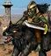
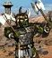
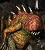
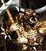
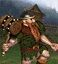
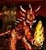
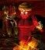
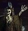
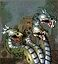

Существа – один из основополагающих элементов серии игр Герои Меча и Магии. Непосредственно из них набираются отряды для армий сражающихся героев. Все существа делятся на уровни(от 1 до 7).
Существа делятся на фракционные, жилища которых находятся в городах, и на нейтральных, жилища котрых имеются только на карте. При этом жилища фракционных существ тоже могут встречатся на карте.
Каждый из фракционных существ обладает усиленным вариантом, чтобы приобретать усиленных существ требуется улучшить жилище. Усиленных юниты имеют увеличенные характеристики, обладают дополнительными свойствами, но дороже стоят.
| Картинка | Название(уровень) | Описание |
| Крестьянин | ||
| Хоббит | Стрелок. Всегда положительная удача. | |
| Бандит | Шпионаж. Показывает точное кол-во вражеских юнитов. | |
| Наездник на кабане | Большой. | |
| Кочевник | Большой. Убирает штраф к передвижению по песку. | |
| Мумия | Нежить. При атаке проклинает. | |
| Снайпер | Стрелок. Отсутствие штрафа за растояние и препятствия. | |
| Золотой голем | Голем. Игнорирует 85% урона заклинаний. | |
| Тролль | Востанавливает здоровье в конце хода. | |
| Алмазный голем | Голем. Игнорирует 95% урона от заклинаний. | |
| Чародей | Стрелок. Без штрафа в ближнем бою. Колдует случайное заклинание. | |
| Волшебный дракон | Большой. Летает. Колдует случайное атакующее заклинание. | |

|
Кристальный дракон | Большой. 20% сопротивляемость магии. Приносит 3 ед. кристалов. |
| Ржавый дракон | Большой. Летает. Драконье дыхание. При атаке понижает показатель защиты врага. | |
| Лазурный дракон | Большой. Летает. Драконье дыхание. Накладывает страх. Иммунитет к магии 1-3 уровня. |
| Картинка | Название | Описание |
| Копейщик | Иммунитет к кавалерийскому бонусу Кавалеристов и Чемпионов. | |
| Алебардщик | Иммунитет к кавалерийскому бонусу Кавалеристов и Чемпионов. | |
| Арбалетчик | Стрелок. | |
| Стрелок | Стрелок. Стреляет дважды. | |
| Грифон | Большой. Летает. Отвечает на две атаки. | |
| Королевский грифон | Большой. Летает. Отвечает на все атаки. | |
| Мечник | ||

|
Крестоносец | Атакует дважды. |
| Монах | Стрелок. | |
| Фанатик | Стрелок. Нет штрафа в ближнем бою. | |
| Кавалерист | Большой. Кавалерийский бонус - увеличение урона в зависимости от пройденого растояния | |
| Чемпионы | Большой. Кавалерийский бонус - увеличение урона в зависимости от пройденого растояния | |
| Ангел | Летает. Дополнительный урон по дьяволам. +1 к боевому духу союзников. | |
| Архагнел | Летает. Дополнительный урон по дьяволам. +1 к боевому духу союзников. Воскрешает союзников. |
| Гоблин | ||
| Хобгоблин | ||
| Наездник на волке | Большой. | |
|  | Налётчик | Большой. Атакует дважды. |
| Орк | Стрелок. | |
|  | Вождь орков | Стрелок. |
| Огр | ||
| Огр-маг | 3 раза за бой кастует "Жажда крови" на союзников. | |
| Птица Рух | Большой. Летает. | |
| Птица Грома | Большой. Летает. При атаке 20% шанс ударить проивника молнией. | |
| Циклоп | Стрелок. Разрушает городские укрепления. | |
| Король циклопов | Стрелок. Разрушает городские укрепления. | |
| Чудище | Большой. Игнорирует 40% защиты врага. | |
| Древнее чудище | Большой. Игнорирует 80% защиты врага. |
| Троглодит | Иммунитет к заклинанию "Ослепление" и "Окаменение". | |
|  | Адский троглодит | Иммунитет к заклинанию "Ослепление" и "Окаменение". |
| Гарпия | После атаки возвращается назад. | |
| Гарпия-ведьма | Враг не отвечает на атаку. После атаки возвращается назад. | |

|
Созерцатель | Стрелок. Без штрафа в ближнем бою. |
| Злобоглаз | Стрелок. Без штрафа в ближнем бою. | |
| Медуза | Большой. Стрелок. Без штрафа в ближнем бою. При рукопашной атаке 20% наложить "Окаменение". | |

|
Королева медуз | Большой. Стрелок. Без штрафа в ближнем бою. При рукопашной атаке 20% наложить "Окаменение". |
| Минотавр | Боевой дух всегда +1. | |
|  | Король минотавров | Боевой дух всегда +1. |
| Мантикора | Большой. Летает. | |
| Скорпикора | Большой. Летает. При атаке 20% наложить "Паралич". | |
| Красный дракон | Большой. Летает. Драконье дыхание. Иммунитет к заклинаниям 1-3 уровня. | |
| Чёрный дракон | Большой. Летает. Драконье дыхание. Дополнительный урон по титанам. Иммунитет к заклинаниям. |
| Пикси | Летает. | |
| Фея | Летает. Враг не отвечает на атаку. | |
| Элементаль воздуха | Элементаль. Двойной урон по Элементалям земли. | |
| Элементаль шторма | Стрелок. Элементаль. Двойной урон по Элементалям земли. Колдует "Защита от воздуха" | |
| Элементаль воды | Большой. Элементаль. Двойной урон по Элементалям огня. | |
| Элементаль льда | Стрелок. Большой. Элементаль. Двойной урон по Элементалям огня. Колдует "Защита от воды" | |
| Элементаль огня | Элементаль. Двойной урон по Элементалям воды. | |
| Элементаль энергии. | Элементаль. Летает. Двойной урон по Элементалям воды. Колдует "Защита от огня" | |
| Элементаль земли. | Элементаль. Двойной урон по Элементалям воздуха. | |
| Элементаль магмы | Элементаль. Двойной урон по Элементалям воздуха. Колдует "Защита от земли". | |
| Элементаль мысли | Элементаль. Враг не отвечает на атаку. Атакует всех вокруг. Наносит 50% врагам с иммунитетом к магии разума. | |

|
Элементаль магии | Элементаль. Враг не отвечает на атаку. Атакует всех вокруг. Иммунитет к магии. Наносит 50% врагам с иммунитетом к магии. |
| Огненая птица | Большой. Летает. Драконье дыхание. иммунитет к магии огня. | |
| Феникс | Большой. Летает. Драконье дыхание. иммунитет к магии огня. После смерти 20% отряда возраждается. |
| Кентавр | Большой. | |
| Капитан кентавров | Большой. | |
|  | Гном | 20% сопротивляемость магии. |
| Боевой гном | 40% сопротивляемость магии | |
| Лесной эльф | Стрелок. | |
| Высокий эльф | Стрелок. Стреляет дважды. | |
| Пегас | Большой. Летает. Стоимость заклинаний противника +2 маны. | |
| Серебрянный пегас | Большой. Летает. Стоимость заклинаний противника +2 маны. | |
| Дендроид | Атакованный противник теряет возможность передвигаться. | |
| Дендроид-солдат | Атакованный противник теряет возможность передвигаться. | |
| Единорог | При атаке накладывает "Ослепление". Союзники вокруг получают 20% сопротивления магии. | |

|
Боевой единорог | При атаке накладывает "Ослепление". Союзники вокруг получают 20% сопротивления магии. |

|
Зелёный дракон | Большой. Летает. Драконье дыхание. Иммунитет к магии 1-3 уровня. |
| Золотой дракон | Большой. Летает. Драконье дыхание. Иммунитет к магии 1-4 уровня. |
| Бес | ||
| Чёрт | 20% маны, потраченной противником похищается. | |
| Гог | Стрелок. | |
|  | Магог | Стрелок. Атака по площади. |
| Адская гончая | Большой. | |
| Цербер. | Большой. Враг не отвечает на атаку. Атака в три направления. | |
| Демон | ||
| Рогатый демон | ||
| Демон бездны | ||
| Владыка бездны | Поднимает демонов из убитых союзников. | |
| Ифрит | Летает. Иммунитет в магии огня. Дополнительный урон по джинам. | |
|  | Султан ифритов | Летает. Иммунитет в магии огня. Дополнительный урон по джинам. Возвращает 20% урона в ближнем бою. |
| Дьявол | Телепортация. Враг не отвечает на атаку. Дополнительный урон по ангелам. -1 к удаче противника. | |
| Архидьявол | Телепортация. Враг не отвечает на атаку. Дополнительный урон по ангелам. -1 к удаче противника. |
| Скелет | Нежить. | |
| Скелет-воин | Нежить | |
| Живой мертвец | Нежить. | |
| Зомби | Нежить. | |
| Призрак | Нежить. Летает. Востанавливает здоровье в конце хода. | |
|  | Привидение | Нежить. Летает. Востанавливает здоровье в конце хода. Каждый ход похищает 2 маны. |
| Вампир | Нежить. Летает. Враг не отвечает на атаку. | |
| Вампир-лорд | Нежить. Летает. Враг не отвечает на атаку. При нанесении урона востанавливает свою численность. | |
| Лич | Нежить. Стрелок. Атака по площади. | |
| Могущественный лич | Нежить. Стрелок. Атака по площади. | |
| Чёрный рыцарь | Большой. Нежить. При атаке 20% шанс наложить "Проклятие". | |
| Рыцарь смерти | Большой. Нежить. При атаке 20% шанс наложить "Проклятие". При атаке 20% шанс нанести двойной урон. | |
| Костяной дракон | Большой. Нежить. Летает. -1 к боевому духу противника. | |
| Призрачный дракон | Большой. Нежить. Летает. -1 к боевому духу противника. При атаке 20% наложить "Старение". |

|
Гнолл | |
| Гнолл-мародёр | ||
| Ящер | Стрелок. | |
| Ящер-воин | Стрелок. | |
| Змий | Летает. При атаке снимает положительные эффекты. | |
| Стрекоза | Летает. При атаке снимает положительные эффекты. При атаке накладывает "Ослабление". | |
| Василиск | Большой. При атаке 20% шанс наложить "Окаменение". | |
| Великий василиск | Большой. При атаке 20% шанс наложить "Окаменение". | |
| Горгона | Большой. | |

|
Могучая горгона | Большой. При атаке уничтожает существ.(10 горгон - 1 существо.) |
| Виверна | Большой. Летает. | |
| Виверна-монарх | Большой. Летает. При атаке 50% шанс наложить "Яд". | |
|  | Гидра | Большой. Враг не отвечает на атаку. Атакует всех вокруг. |
| Гидра хаоса | Большой. Враг не отвечает на атаку. Атакует всех вокруг. |
| Гремлин | ||
| Мастер-гремлин | Стрелок. | |

|
Каменная гаргулья | Гаргулья. Летает. |

|
Обсидиановая гаргулья | Гаргулья. Летает. |
| Каменный голем | Голем. Игнорирует 50% урона от заклинаний. | |
| Железный голем | Голем. Игнорирует 75% урона от заклинаний. | |
| Маг | Стрелок. Без штрафа в ближнем бою. Стоимость всех заклинаний -2 ед. | |
| Архимаг | Стрелок. Без штрафа в ближнем бою. Отсутствие штрафа за препятствия. Стоимость всех заклинаний -2 ед. | |
| Джинн | Летает. Дополнительный урон по ифритам. | |
| Мастер-джинн | Летает. Дополнительный урон по ифритам. Колдует случайный положительный эффект. | |
| Нага | Большой. Враг не отвечает на атаку. | |
| Королева наг | Большой. Враг не отвечает на атаку. | |
| Гигант | Иммунитет к магии разума. | |
| Титан | Стрелок. Иммунитет к магии разума. Без штрафа в ближнем бою. Дополнительный урон по Чёрным драконам. |